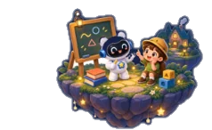
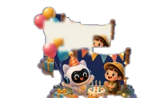

01 · Cùng sáng tạo5–7 PHÚT
Kể chuyện
Pika kể, con chọn diễn biến tiếp theo.
Giữ nút bánh răng 1 giây để mở bảng này. Tự về màn chào sau 90 giây không ai chạm.
Pika kể, con chọn diễn biến tiếp theo.
Hát bài quen, lặp lại một từ thật dễ.
Câu “thần chú” nhỏ giúp con dám nói.
Doraemon, Elsa hay siêu anh hùng?
Con muốn khám phá ốc đảo nào hôm nay?
Bắt đầu bằng những cuộc trò chuyện thật vui.


Lộ trình 24 tháng · Chuẩn Cambridge YLE
Mỗi mốc là một bước nhỏ để con tự tin nói tiếng Anh cùng Pika.
Pika tạo môi trường an toàn, con bớt áp lực khi nói.
“Im lặng, chỉ gật đầu…”15 phút mỗi ngày qua trò chơi micro và hội thoại ngắn.
“Hello! I like cats!”Nói về bản thân, gia đình, đồ vật quen thuộc · ~500 từ.
“I have a red bike!”Role-play và tranh trình tự giúp con sử dụng ~1.000 từ.
“Yesterday I went to the zoo!”Con chủ động kể, phản biện, sẵn sàng chinh phục A2.
“I think robots are cool!”Pika tự điều chỉnh nhịp độ theo từng bé — nhanh hơn hay chậm hơn đều được.
App phụ huynh · Đồng hành cùng con
Giao bài, xem tiến độ và kiểm soát trải nghiệm của con.
Không cần cài đặt lại trên robot,
không làm gián đoạn cuộc chơi.
Vuốt để xem tính năng tiếp theo
Hỏi đáp · Ba mẹ quan tâm
Những điều ba mẹ hay hỏi Pika nhất tại quầy trải nghiệm.
Quét mã để kết nối Zalo OA — ba mẹ được tư vấn, giao bài và hỗ trợ nhanh chóng.
🎟️ Bé nói được từ 5 câu — nhận voucher nhỏ tại quầy nhé!
Từ ngại nói đến tự tin thi Cambridge YLE — mỗi ngày chỉ 15 phút cùng Pika. Bé nhận 5 tinh thể Pika!
Quét mã Zalo OA để nhận lộ trình 24 tháng và được Pika hỗ trợ.
Góc trải nghiệm Pika được thiết kế cho tablet dựng dọc.